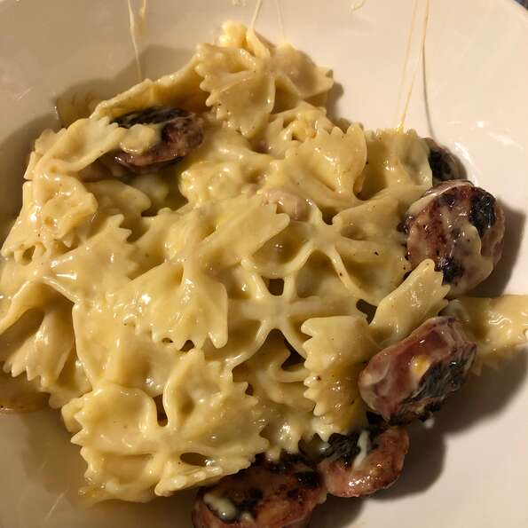

Pasta
Description
This recipe is one of my favorite's for making pasta.
Bowtie pasta noodles are used for this recipe and they go
well with a creamy alfredo sauce.

Ingredients
- 8 ounces of bow tie/farfalle pasta
- 1- 10.75 ounce can condensed cream of chicken soup
- 1/4 cup of milk
- 2 tablespoons shredded cheddar cheese
- 2 cups alfredo sauce
Directions
- Bring a large pot of lightly salted water to a boil.
Add pasta and cook for 8 to 10 minutes then drain.
- Return pasta to pot; stir in soup and milk.
- Cook and stir over medium heat until heated through.
- Add cheese and alfredo sauce, then cook and stir just until cheese is melted.
Serve hot.
Enjoy!